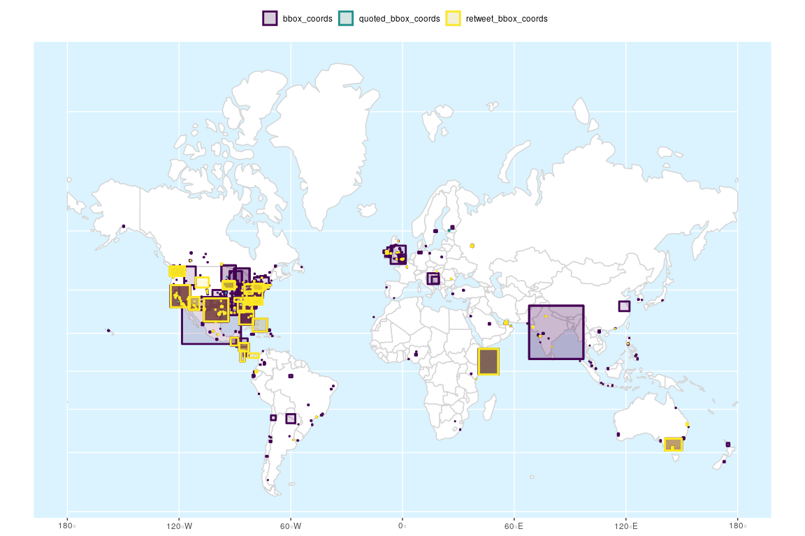

Introduction
{tweetio}’s goal is to enable safe, efficient I/O and transformation of Twitter data. Whether the data came from the Twitter API, a database dump, or some other source, {tweetio}’s job is to get them into R and ready for analysis.
{tweetio} is not a competitor to {rtweet}: it is not interested in collecting Twitter data. That said, it definitely attempts to compliment it by emulating its data frame schema because…
- It’s incredibly easy to use.
- It’s more efficient to analyze than a key-value format following the raw data.
- It’d be a waste not to maximize compatibility with tools built specifically around
{rtweet}’s data frames.
Installation
You’ll need a C++ compiler. If you’re using Windows, that means Rtools.
if (!requireNamespace("remotes", quietly = TRUE)) install.packages("remotes")
remotes::install_github("knapply/tweetio")Usage
library(tweetio){tweetio} uses {data.table} internally for performance and stability reasons, but if you’re a {tidyverse} fan who’s accustomed to dealing with tibbles, you can set an option so that tibbles are always returned.
Because tibbles have an incredibly informative and user-friendly print() method, we’ll set the option for examples. Note that if the {tibble} package is not installed, this option is ignored.
options(tweetio.as_tibble = TRUE)You can check on all available {tweetio} options using tweetio_options().
Simple Example
First, we’ll save a stream of tweets using rtweet::stream_tweets().
temp_file <- tempfile(fileext = ".json")
rtweet::stream_tweets(timeout = 15, parse = FALSE,
file_name = temp_file)We can then pass the file path to tweetio::read_tweets() to efficiently parse the data into an {rtweet}-style data frame.
tiny_rtweet_stream <- read_tweets(temp_file)
tiny_rtweet_stream#> # A tibble: 673 x 93
#> user_id status_id created_at screen_name text source reply_to_status… reply_to_user_id reply_to_screen… is_quote is_retweet hashtags
#> <chr> <chr> <dttm> <chr> <chr> <chr> <chr> <chr> <chr> <lgl> <lgl> <list>
#> 1 111362… 12281364… 2020-02-14 01:58:34 koankitune RT @… Twitt… <NA> <NA> <NA> FALSE TRUE <chr [2…
#> 2 951770… 12281364… 2020-02-14 01:58:34 huntanacon… @240… Twitt… 122813639390323… 951770277603565… huntanaconda FALSE FALSE <chr [1…
#> 3 948509… 12281364… 2020-02-14 01:58:34 fahad__650 @fai… Twitt… 122809170470157… 331000792 faisalaljafan FALSE FALSE <chr [1…
#> 4 112756… 12281364… 2020-02-14 01:58:34 _harrystyl… @int… Twitt… 122813616814494… 122293944303378… intensodemierd FALSE FALSE <chr [1…
#> 5 898906… 12281364… 2020-02-14 01:58:34 kashunco2 RT @… Twitt… <NA> <NA> <NA> FALSE TRUE <chr [1…
#> 6 254312… 12281364… 2020-02-14 01:58:34 deinertdl VAI … Twitt… <NA> <NA> <NA> FALSE FALSE <chr [1…
#> 7 970449… 12281364… 2020-02-14 01:58:34 _samisosa RT @… Twitt… <NA> <NA> <NA> FALSE TRUE <chr [1…
#> 8 984421… 12281364… 2020-02-14 01:58:34 iceskate_s… お出かけ… Twitt… <NA> <NA> <NA> FALSE FALSE <chr [1…
#> 9 817513… 12281364… 2020-02-14 01:58:34 its_destin… RT @… Twitt… <NA> <NA> <NA> FALSE TRUE <chr [1…
#> 10 177414… 12281364… 2020-02-14 01:58:34 canderson8… RT @… Twitt… <NA> <NA> <NA> FALSE TRUE <chr [1…
#> # … with 663 more rows, and 81 more variables: urls_expanded_url <list>, media_url <list>, media_expanded_url <list>, media_type <list>,
#> # mentions_user_id <list>, mentions_screen_name <list>, lang <chr>, quoted_status_id <chr>, quoted_text <chr>, quoted_created_at <dttm>,
#> # quoted_source <chr>, quoted_favorite_count <int>, quoted_retweet_count <int>, quoted_user_id <chr>, quoted_screen_name <chr>, quoted_name <chr>,
#> # quoted_followers_count <int>, quoted_friends_count <int>, quoted_statuses_count <int>, quoted_location <chr>, quoted_description <chr>,
#> # quoted_verified <lgl>, retweet_status_id <chr>, retweet_text <chr>, retweet_created_at <dttm>, retweet_source <chr>,
#> # retweet_favorite_count <int>, retweet_retweet_count <int>, retweet_user_id <chr>, retweet_screen_name <chr>, retweet_name <chr>,
#> # retweet_followers_count <int>, retweet_friends_count <int>, retweet_statuses_count <int>, retweet_location <chr>, retweet_description <chr>,
#> # retweet_verified <lgl>, place_url <chr>, place_name <chr>, place_full_name <chr>, place_type <chr>, country <chr>, country_code <chr>,
#> # bbox_coords <list>, status_url <chr>, name <chr>, location <chr>, description <chr>, url <chr>, protected <lgl>, followers_count <int>,
#> # friends_count <int>, listed_count <int>, statuses_count <int>, favourites_count <int>, account_created_at <dttm>, verified <lgl>,
#> # profile_url <chr>, account_lang <chr>, profile_banner_url <chr>, profile_image_url <chr>, is_retweeted <lgl>, retweet_place_url <chr>,
#> # retweet_place_name <chr>, retweet_place_full_name <chr>, retweet_place_type <chr>, retweet_country <chr>, retweet_country_code <chr>,
#> # retweet_bbox_coords <list>, quoted_place_url <chr>, quoted_place_name <chr>, quoted_place_full_name <chr>, quoted_place_type <chr>,
#> # quoted_country <chr>, quoted_country_code <chr>, quoted_bbox_coords <list>, timestamp_ms <dttm>, contributors_enabled <lgl>,
#> # retweet_status_url <chr>, quoted_tweet_url <chr>, reply_to_status_url <chr>Performance
rtweet::parse_stream() is totally sufficient for smaller files (as long as the returned data are valid JSON), but tweetio::read_tweets() is much faster.
small_rtweet_stream <- "inst/example-data/api-stream-small.json.gz"
res <- bench::mark(
rtweet = rtweet::parse_stream(small_rtweet_stream),
tweetio = tweetio::read_tweets(small_rtweet_stream)
,
check = FALSE,
filter_gc = FALSE
)
res[, 1:9]#> # A tibble: 2 x 6
#> expression min median `itr/sec` mem_alloc `gc/sec`
#> <bch:expr> <bch:tm> <bch:tm> <dbl> <bch:byt> <dbl>
#> 1 rtweet 1.2s 1.2s 0.830 39.1MB 11.6
#> 2 tweetio 52.9ms 54.8ms 17.9 1.9MB 1.99With bigger files, using rtweet::parse_stream() is no longer realistic, especially if the JSON are invalid.
That’s one of the situations where tweetio::read_tweets() can be extremely helpful.
big_tweet_stream_path <- "inst/example-data/ufc-tweet-stream.json.gz"
temp_file <- tempfile(fileext = ".json")
R.utils::gunzip(big_tweet_stream_path, destname = temp_file, remove = FALSE)
cat("- compressed:", file.size(big_tweet_stream_path) / 1e6, "MB\n")res <- bench::mark(
rtweet = rtweet_df <- rtweet::parse_stream(big_tweet_stream_path),
tweetio = tweetio_df <- tweetio::read_tweets(big_tweet_stream_path)
,
filter_gc = FALSE,
check = FALSE,
iterations = 1
)
res[, 1:9]#> # A tibble: 2 x 6
#> expression min median `itr/sec` mem_alloc `gc/sec`
#> <bch:expr> <bch:tm> <bch:tm> <dbl> <bch:byt> <dbl>
#> 1 rtweet 3.34m 3.34m 0.00499 6.75GB 1.77
#> 2 tweetio 9.04s 9.04s 0.111 234.76MB 0.332Not only is tweetio::read_tweets() more efficient, it’s able to successfully parse much more of the data (99,422 vs 99,422 rows).
Data Dumps
A common practice for handling social media data at scale is to store them in search engine databases like Elasticsearch, but it’s (unfortunately) possible that you’ll need to work with data dumps.
I’ve encountered two flavors of these schema (that may be in .gzip files or ZIP archives):
- .jsonl: newline-delimited JSON
- .json: the complete contents of a database dump packed in a JSON array
This has three unfortunate consequences:
- Packages that were purpose-built to work directly with
{rtweet}’s data frames can’t play along with your data. - You’re going to waste most of your time (and memory) getting data into R that you’re not going to use.
- The data are very tedious to restructure in R (lists of lists of lists of lists of lists…).
{tweetio} solves this by parsing everything and building the data frames at the C++ level. It even takes care of decompression of compressed data fro you.
Spatial Tweets
If you have {sf} installed, you can use as_tweet_sf() to only keep those tweets that contain valid bounding box polygons or points.
tweet_sf <- as_tweet_sf(tweetio_df)
tweet_sf[, "geometry"]#> Simple feature collection with 1804 features and 0 fields
#> geometry type: POLYGON
#> dimension: XY
#> bbox: xmin: -158.048 ymin: -50.35726 xmax: 175.5507 ymax: 61.4262
#> epsg (SRID): 4326
#> proj4string: +proj=longlat +datum=WGS84 +no_defs
#> # A tibble: 1,804 x 1
#> geometry
#> <POLYGON [°]>
#> 1 ((-90.23761 29.96836, -90.23761 30.03413, -90.11965 30.03413, -90.11965 29.96836, -90.237...
#> 2 ((-80.20811 26.08094, -80.20811 26.2198, -80.09024 26.2198, -80.09024 26.08094, -80.20811...
#> 3 ((17.08005 59.73069, 17.08005 60.18611, 18.47324 60.18611, 18.47324 59.73069, 17.08005 59...
#> 4 ((-80.51985 39.7198, -80.51985 42.51607, -74.68952 42.51607, -74.68952 39.7198, -80.51985...
#> 5 ((-80.34364 25.59918, -80.34364 25.64553, -80.2875 25.64553, -80.2875 25.59918, -80.34364...
#> 6 ((-118.6684 33.70454, -118.6684 34.33704, -118.1554 34.33704, -118.1554 33.70454, -118.66...
#> 7 ((-122.0662 37.92423, -122.0662 38.02242, -121.931 38.02242, -121.931 37.92423, -122.0662...
#> 8 ((-118.4485 33.97688, -118.4485 34.03514, -118.3695 34.03514, -118.3695 33.97688, -118.44...
#> 9 ((-97.66262 27.57851, -97.66262 27.89579, -97.20223 27.89579, -97.20223 27.57851, -97.662...
#> 10 ((-118.6684 33.70454, -118.6684 34.33704, -118.1554 34.33704, -118.1554 33.70454, -118.66...
#> # … with 1,794 more rowsThere are currently four columns that can potentially hold spatial geometries:
"bbox_coords""quoted_bbox_coords""retweet_bbox_coords""geo_coords"
You can select which one to use to build your sf object by modifying the geom_col= parameter (default: "bbox_coords")
as_tweet_sf(tweetio_df,
geom_col = "quoted_bbox_coords")[, "geometry"]#> Simple feature collection with 736 features and 0 fields
#> geometry type: POLYGON
#> dimension: XY
#> bbox: xmin: -124.849 ymin: -27.76744 xmax: 153.3179 ymax: 60.29791
#> epsg (SRID): 4326
#> proj4string: +proj=longlat +datum=WGS84 +no_defs
#> # A tibble: 736 x 1
#> geometry
#> <POLYGON [°]>
#> 1 ((-73.99354 40.75075, -73.99354 40.75075, -73.99354 40.75075, -73.99354 40.75075, -73.993...
#> 2 ((-73.99354 40.75075, -73.99354 40.75075, -73.99354 40.75075, -73.99354 40.75075, -73.993...
#> 3 ((-73.99354 40.75075, -73.99354 40.75075, -73.99354 40.75075, -73.99354 40.75075, -73.993...
#> 4 ((-73.99354 40.75075, -73.99354 40.75075, -73.99354 40.75075, -73.99354 40.75075, -73.993...
#> 5 ((-73.99354 40.75075, -73.99354 40.75075, -73.99354 40.75075, -73.99354 40.75075, -73.993...
#> 6 ((-73.99354 40.75075, -73.99354 40.75075, -73.99354 40.75075, -73.99354 40.75075, -73.993...
#> 7 ((-73.99354 40.75075, -73.99354 40.75075, -73.99354 40.75075, -73.99354 40.75075, -73.993...
#> 8 ((-73.99354 40.75075, -73.99354 40.75075, -73.99354 40.75075, -73.99354 40.75075, -73.993...
#> 9 ((-73.99354 40.75075, -73.99354 40.75075, -73.99354 40.75075, -73.99354 40.75075, -73.993...
#> 10 ((-73.99354 40.75075, -73.99354 40.75075, -73.99354 40.75075, -73.99354 40.75075, -73.993...
#> # … with 726 more rowsYou can also build all the supported bounding boxes by setting geom_col= to "all".
all_bboxes <- as_tweet_sf(tweetio_df, geom_col = "all")
all_bboxes[, c("which_geom", "geometry")]#> Simple feature collection with 5107 features and 1 field
#> geometry type: POLYGON
#> dimension: XY
#> bbox: xmin: -158.048 ymin: -50.35726 xmax: 175.5507 ymax: 61.4262
#> epsg (SRID): 4326
#> proj4string: +proj=longlat +datum=WGS84 +no_defs
#> # A tibble: 5,107 x 2
#> which_geom geometry
#> <chr> <POLYGON [°]>
#> 1 bbox_coords ((-90.23761 29.96836, -90.23761 30.03413, -90.11965 30.03413, -90.11965 29.96836, -90.237...
#> 2 bbox_coords ((-80.20811 26.08094, -80.20811 26.2198, -80.09024 26.2198, -80.09024 26.08094, -80.20811...
#> 3 bbox_coords ((17.08005 59.73069, 17.08005 60.18611, 18.47324 60.18611, 18.47324 59.73069, 17.08005 59...
#> 4 bbox_coords ((-80.51985 39.7198, -80.51985 42.51607, -74.68952 42.51607, -74.68952 39.7198, -80.51985...
#> 5 bbox_coords ((-80.34364 25.59918, -80.34364 25.64553, -80.2875 25.64553, -80.2875 25.59918, -80.34364...
#> 6 bbox_coords ((-118.6684 33.70454, -118.6684 34.33704, -118.1554 34.33704, -118.1554 33.70454, -118.66...
#> 7 bbox_coords ((-122.0662 37.92423, -122.0662 38.02242, -121.931 38.02242, -121.931 37.92423, -122.0662...
#> 8 bbox_coords ((-118.4485 33.97688, -118.4485 34.03514, -118.3695 34.03514, -118.3695 33.97688, -118.44...
#> 9 bbox_coords ((-97.66262 27.57851, -97.66262 27.89579, -97.20223 27.89579, -97.20223 27.57851, -97.662...
#> 10 bbox_coords ((-118.6684 33.70454, -118.6684 34.33704, -118.1554 34.33704, -118.1554 33.70454, -118.66...
#> # … with 5,097 more rowsFrom there, you can easily use the data like any other {sf} object.
library(ggplot2)
world <- rnaturalearth::ne_countries(returnclass = "sf")
world <- world[world$continent != "Antarctica", ]
ggplot(all_bboxes) +
geom_sf(fill = "white", color = "lightgray", data = world) +
geom_sf(aes(fill = which_geom, color = which_geom),
alpha = 0.15, size = 1, show.legend = TRUE) +
coord_sf(crs = 3857) +
scale_fill_viridis_d() +
scale_color_viridis_d() +
theme(legend.title = element_blank(), legend.position = "top",
panel.background = element_rect(fill = "#daf3ff"))
Tweet Networks
If you want to analyze tweet networks and have {igraph} or {network} installed, you can get started immediately using tweetio::as_tweet_igraph() or tweetio::as_tweet_network().
tweet_df <- tweetio_df[1:1e4, ]
as_tweet_igraph(tweet_df)#> IGRAPH d166c43 DN-- 6265 16373 --
#> + attr: name (v/c), status_id (e/c), relation (e/c)
#> + edges from d166c43 (vertex names):
#> [1] 340165454 ->44607937 50229830 ->146322653 1113359075029295106->6446742
#> [4] 3427037277 ->6446742 2426567863 ->6446742 1049130232559620096->6446742
#> [7] 54342307 ->45882011 850484615978602496 ->6446742 3223860438 ->1082759930338258944
#> [10] 1128691062225219584->327117944 158942796 ->1148290116349095936 421186669 ->1062738433716686848
#> [13] 781608484257214464 ->6446742 2519063076 ->146322653 361935609 ->6446742
#> [16] 822180925467398148 ->32522055 1107856314875695105->166751745 766650582409109505 ->39349894
#> [19] 1401244394 ->146322653 1161588424488341504->1160955424297721858 1095592508095119366->6446742
#> [22] 468454269 ->6446742 3151950054 ->29275869 38842139 ->1062738433716686848
#> + ... omitted several edgesas_tweet_network(tweet_df)#> Network attributes:
#> vertices = 6265
#> directed = TRUE
#> hyper = FALSE
#> loops = TRUE
#> multiple = TRUE
#> bipartite = FALSE
#> total edges= 16373
#> missing edges= 0
#> non-missing edges= 16373
#>
#> Vertex attribute names:
#> vertex.names
#>
#> Edge attribute names not shownIf you want to take advantage of all the metadata available, you can set all_status_data and/or all_user_data to TRUE
as_tweet_igraph(tweet_df,
all_user_data = TRUE, all_status_data = TRUE)#> IGRAPH e2c9281 DN-- 6265 16373 --
#> + attr: name (v/c), timestamp_ms (v/n), name.y (v/c), screen_name (v/c), location (v/c), description (v/c), url (v/c), protected
#> | (v/l), followers_count (v/n), friends_count (v/n), listed_count (v/n), statuses_count (v/n), favourites_count (v/n),
#> | account_created_at (v/n), verified (v/l), profile_url (v/c), account_lang (v/c), profile_banner_url (v/c), profile_image_url (v/c),
#> | bbox_coords (v/x), status_id (e/c), relation (e/c), created_at (e/n), text (e/c), status_url (e/c), source (e/c), is_quote (e/l),
#> | is_retweeted (e/l), media_url (e/x), media_type (e/x), place_url (e/c), place_name (e/c), place_full_name (e/c), place_type (e/c),
#> | country (e/c), country_code (e/c), bbox_coords (e/x), status_type (e/c)
#> + edges from e2c9281 (vertex names):
#> [1] 952042742 ->6446742 952042742 ->6446742 351245806 ->139823781 351245806 ->260581527
#> [5] 351245806 ->139823781 3343775098 ->2172990199 3343775098 ->2172990199 350722244 ->177410033
#> [9] 350722244 ->177410033 839542094624518144->39344374 839542094624518144->146322653 839542094624518144->39344374
#> + ... omitted several edgesas_tweet_network(tweet_df,
all_user_data = TRUE, all_status_data = TRUE)#> Network attributes:
#> vertices = 6265
#> directed = TRUE
#> hyper = FALSE
#> loops = TRUE
#> multiple = TRUE
#> bipartite = FALSE
#> total edges= 16373
#> missing edges= 0
#> non-missing edges= 16373
#>
#> Vertex attribute names:
#> account_created_at account_lang bbox_coords description favourites_count followers_count friends_count listed_count location name.y profile_banner_url profile_image_url profile_url protected screen_name statuses_count timestamp_ms url verified vertex.names
#>
#> Edge attribute names not shownTwo-Mode Networks
You can also build two-mode networks by specifying the target_class as "hashtag"s, "url"s, or "media".
- Returned
<igraph>s will be set as bipartite following{igraph}’s convention of alogicalvertex attribute specifying each partition. Accounts are alwaysTRUE. - Returned
<network>s will be set as bipartite following{network}’s convention of ordering the “actors” first, and setting the network-level attribute of “bipartite” as the number of “actors”. Accounts are always the “actors”.
If bipartite, the returned objects are always set as undirected.
Users to URLs
as_tweet_igraph(tweet_df, target_class = "url")#> IGRAPH 3448809 UN-B 1073 1083 --
#> + attr: name (v/c), type (v/l), status_id (e/c), relation (e/c)
#> + edges from 3448809 (vertex names):
#> [1] 54342307 --https://twitter.com/jjmast1/status/1190812770951925760
#> [2] 822180925467398148 --https://twitter.com/usatoday/status/1190848577171529729
#> [3] 1161588424488341504--https://livestreamon.co/ufc244
#> [4] 1020289868231036929--https://twitter.com/sososfm/status/1190817388176035840
#> [5] 222715765 --http://is.gd/BDIHaF
#> [6] 700295730 --https://twitter.com/Karlos_ch/status/1190830330703499266
#> [7] 1174700278769225730--https://twitter.com/mitchhorowitz/status/1190809746347085824
#> [8] 1888701283 --https://www.rawstory.com/2019/11/trump-brutally-mocked-for-getting-booed-like-hell-every-time-he-goes-out-in-public/
#> + ... omitted several edgesas_tweet_network(tweet_df, target_class = "url")Users to Media
as_tweet_igraph(tweet_df, target_class = "media")#> IGRAPH c8ae551 UN-B 3340 3509 --
#> + attr: name (v/c), type (v/l), status_id (e/c), relation (e/c)
#> + edges from c8ae551 (vertex names):
#> [1] 1113359075029295106--http://pbs.twimg.com/tweet_video_thumb/EIa_t4bXYAEFVGR.jpg
#> [2] 3427037277 --http://pbs.twimg.com/tweet_video_thumb/EIa_t4bXYAEFVGR.jpg
#> [3] 2426567863 --http://pbs.twimg.com/tweet_video_thumb/EIa_t4bXYAEFVGR.jpg
#> [4] 1049130232559620096--http://pbs.twimg.com/tweet_video_thumb/EIa_t4bXYAEFVGR.jpg
#> [5] 767474462254108674 --http://pbs.twimg.com/tweet_video_thumb/EIa_-hyX0AA7j1o.jpg
#> [6] 850484615978602496 --http://pbs.twimg.com/media/EIa--ZTXUAEP7PH.jpg
#> [7] 3223860438 --http://pbs.twimg.com/tweet_video_thumb/EIa_t4bXYAEFVGR.jpg
#> [8] 158942796 --http://pbs.twimg.com/ext_tw_video_thumb/1190817246110720000/pu/img/jw75ZV3YmtL2PgXT.jpg
#> + ... omitted several edgesas_tweet_network(tweet_df, target_class = "media")
<proto_net>
You’re not stuck with going directly to <igraph>s or <network>s though. Underneath the hood, as_tweet_igraph() and as_tweet_network() use as_proto_net() to build a <proto_net>, a list of edge and node data frames.
as_proto_net(tweetio_df,
all_status_data = TRUE, all_user_data = TRUE)#> $edges
#> # A tibble: 181,842 x 20
#> from to status_id relation created_at text status_url source is_quote is_retweeted media_url media_type place_url place_name
#> <chr> <chr> <chr> <chr> <dttm> <chr> <chr> <chr> <lgl> <lgl> <list> <list> <chr> <chr>
#> 1 1717… 2605… 11908699… retweet 2019-11-03 05:55:01 "RT … https://t… Twitt… FALSE FALSE <chr [1]> <chr [1]> <NA> <NA>
#> 2 1717… 2605… 11908699… mentions 2019-11-03 05:55:01 "RT … https://t… Twitt… FALSE FALSE <chr [1]> <chr [1]> <NA> <NA>
#> 3 2338… 3700… 11908699… retweet 2019-11-03 05:55:01 "RT … https://t… Twitt… FALSE FALSE <chr [1]> <chr [1]> <NA> <NA>
#> 4 2338… 3700… 11908699… mentions 2019-11-03 05:55:01 "RT … https://t… Twitt… FALSE FALSE <chr [1]> <chr [1]> <NA> <NA>
#> 5 7568… 1062… 11908699… retweet 2019-11-03 05:55:01 "RT … https://t… Twitt… FALSE FALSE <chr [1]> <chr [1]> <NA> <NA>
#> 6 7568… 1062… 11908699… mentions 2019-11-03 05:55:01 "RT … https://t… Twitt… FALSE FALSE <chr [1]> <chr [1]> <NA> <NA>
#> 7 2899… 6446… 11908699… retweet 2019-11-03 05:55:01 "RT … https://t… Twitt… FALSE FALSE <chr [1]> <chr [1]> <NA> <NA>
#> 8 2899… 6446… 11908699… mentions 2019-11-03 05:55:01 "RT … https://t… Twitt… FALSE FALSE <chr [1]> <chr [1]> <NA> <NA>
#> 9 2899… 5218… 11908699… mentions 2019-11-03 05:55:01 "RT … https://t… Twitt… FALSE FALSE <chr [1]> <chr [1]> <NA> <NA>
#> 10 7889… 1667… 11908699… retweet 2019-11-03 05:55:01 "RT … https://t… Twitt… FALSE FALSE <chr [1]> <chr [1]> <NA> <NA>
#> # … with 181,832 more rows, and 6 more variables: place_full_name <chr>, place_type <chr>, country <chr>, country_code <chr>, bbox_coords <list>,
#> # status_type <chr>
#>
#> $nodes
#> # A tibble: 50,863 x 20
#> name timestamp_ms name.y screen_name location description url protected followers_count friends_count listed_count statuses_count
#> <chr> <dttm> <chr> <chr> <chr> <chr> <chr> <lgl> <int> <int> <int> <int>
#> 1 1000… 2019-11-03 04:53:06 ᴇʟ ᴊᴜ… Urbeaner_ "Colora… UCCS ‘21 |… <NA> FALSE 158 250 3 16695
#> 2 1000… 2019-11-03 05:24:27 adrie… a2rien_ "DTM 😇" <NA> <NA> FALSE 161 124 0 1046
#> 3 1000… 2019-11-03 05:08:38 Adee SailorSlim "Freepo… Instagram:… <NA> FALSE 54 24 0 1571
#> 4 1000… 2019-11-03 05:13:37 me, m… Amanda8728… "Usa " take your … <NA> FALSE 28 243 0 982
#> 5 1000… 2019-11-03 04:49:04 hoodi… eghoops1 "htx" shoot hoop… http… FALSE 838 258 27 63978
#> 6 1000… 2019-11-03 05:19:56 Dylan… CieslikDyl… "Oak Ri… Aspiring B… <NA> FALSE 38 137 0 2853
#> 7 1000… 2019-11-03 04:37:22 ThomT… ThomThom715 <NA> <NA> <NA> FALSE 3 30 0 1358
#> 8 1000… 2019-11-03 05:01:53 Conor… CnrKgh2809 "Irelan… •Liverpool… <NA> FALSE 70 769 0 1935
#> 9 1000… 2019-11-03 04:55:38 Straw… JorgeAReyn… "Hollis… WORK HARD,… <NA> FALSE 20 396 0 789
#> 10 1000… 2019-11-03 04:52:11 Rocio rociofbaby "Texas" 27 ♊️ A•L•… <NA> FALSE 464 629 3 21483
#> # … with 50,853 more rows, and 8 more variables: favourites_count <int>, account_created_at <dttm>, verified <lgl>, profile_url <chr>,
#> # account_lang <chr>, profile_banner_url <chr>, profile_image_url <chr>, bbox_coords <list>
#>
#> attr(,"class")
#> [1] "proto_net"
#> attr(,"target_class")
#> [1] "user"Progress
Shout Outs
The {rtweet} package spoils R users rotten, in the best possible way. The underlying data carpentry is so seamless that the user doesn’t need to know anything about the horrors of Twitter data, which is pretty amazing. If you use {rtweet}, you probably owe Michael Kearney some citations. If he hadn’t developed a way to sensibly structure tweet data frames in R, {tweetio} would’ve never happened.
{tweetio} uses a combination of C++ via {Rcpp}, the rapidjson C++ library (made available by {rapidjsonr}), {jsonify}) for an R-level interface to rapidjson, {RcppProgress}), and R’s not-so-secret super weapon: {data.table}.
Major inspiration from {ndjson} was taken, particularly its use of Gzstream.